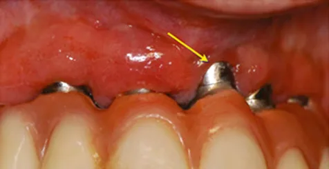
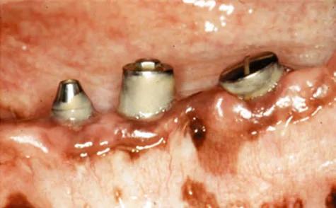

نسخه استخراجشده؛ ترجمه یا تأیید علمی انجام نشده است. وضعیت: captured
رابطهی این دو بیماری را میشود با یک قیاس آشنا توضیح داد:
«از آنجا که موکوزیت پریایمپلنت پیشساز آشکار پریایمپلنتیت است، همانطور که ژنژیویت برای پریودنتیت، پیشگیری و درمان موکوزیت پیشنیازی مهم برای پیشگیری از پریایمپلنتیت بهنظر میرسد.»
و «موکوزیت پریایمپلنت درماننشده ممکن است به پریایمپلنتیت پیشرفت کند.»
حالا عددها — و این دو عدد را باید کنار هم دید:
عدد اول: «بیمارانی که در ابتدای مطالعه موکوزیت پریایمپلنت داشتند و درمان حمایتی منظم پریایمپلنت دریافت نمیکردند، در یک دورهی ۵ ساله بروز پریایمپلنتیت ۴۴ درصد داشتند.»
عدد دوم: «در گروه موازی از بیماران با موکوزیت پریایمپلنت که در برنامهی درمان حمایتی منظم شرکت داشتند، بروز پریایمپلنتیت در ۵ سال ۱۸ درصد بود.»
۴۴ در برابر ۱۸. هر دو گروه از یک نقطه شروع کردند — هر دو موکوزیت داشتند. تنها تفاوت، حضور یا نبود برنامهی نگهداری منظم بود.
و نتیجه روشن است: «این مشاهده اهمیت تشخیص و درمان موکوزیت پریایمپلنت را برای پیشگیری از پیشرفت به پریایمپلنتیت برجسته میکند.»
به یک نکتهی مهم توجه کن: برنامهی نگهداری خطر را حذف نکرد — ۱۸ درصد هنوز پیشرفت کردند. ولی آن را بیش از نصف کاهش داد. این تمایز مهم است، چون هم ارزش نگهداری را نشان میدهد و هم مانع وعدهی غیرواقعی به بیمار میشود.

خبر خوب این است که موکوزیت برگشتپذیر است. و روشی که این را ثابت کرد، ساده و ظریف بود.
مدل موکوزیت تجربی: «از دوازده فرد با شرایط سالم پریودنتال و پریایمپلنت خواسته شد که برای مدت ۳ هفته از تمام اقدامات بهداشت دهان خودداری کنند.»
در پژوهش دیگری، ۲۰ بیمار بخشیبیدندان که پریودنتیت پیشرفتهشان درمان شده بود و ایمپلنت داشتند، ۳ هفته بهداشت دهان را کنار گذاشتند؛ تجمع پلاک و پاسخ بافت نرم در دندانها و ایمپلنتها به شکل مشابهی پیش رفت.
در پژوهشی دیگر با ۱۵ فرد بخشیبیدندان، برگشتپذیری ژنژیویت/موکوزیت پریایمپلنت القاشدهی تجربی گزارش شد: پس از ازسرگیری بهداشت دهان، التهاب هم در لثه و هم در مخاط پریایمپلنت بهتدریج برطرف شد.
و نتیجهگیری: «موکوزیت پریایمپلنت و ژنژیویت ویژگیهای مشترک بسیاری دارند.»
پس منطق درمان روشن است: همانطور که ژنژیویت با حذف بیوفیلم برمیگردد، موکوزیت هم برمیگردد — به شرط آنکه هنوز استخوانی از دست نرفته باشد.
و این همان چیزی است که موکوزیت را به پنجرهی طلایی تبدیل میکند: آخرین مرحلهای که در آن بازگشت کامل ممکن است.
پاتوژنز — از سلامت تا بیماری:
جمعبندی این مسیر چنین است: «مطالعات در انسان و آزمایشها در حیوانات مستند کردهاند که تشکیل نوپدید بیوفیلم روی سطح ایمپلنت، پاسخ میزبانی را آغاز میکند که شامل استقرار یک ضایعهی التهابی در مخاط پریایمپلنت است (موکوزیت پریایمپلنت).»
و مرحلهی بعد: «در حضور مداوم بیوفیلم زیرلثهای، ضایعه در مخاط مارجینال اطراف ایمپلنتها ممکن است گاه در جهت «اپیکالی» گسترش یابد تا بافت سخت را درگیر کند، استئواینتگریشن را به خطر بیندازد، درجات متفاوتی از از دست رفتن استخوان مارجینال ایجاد کند (پریایمپلنتیت) و در نبود درمان، به از دست رفتن ایمپلنت هم بینجامد.»
به کلمهی «مداوم» دقت کن. عامل تعیینکننده، ماندگاری بیوفیلم است نه صرفاً حضور یکبارهی آن. و همین است که برنامهی نگهداری را از یک کار زیبایی به یک مداخلهی درمانی تبدیل میکند.
و شباهت بنیادی با دندان: «اتیولوژی و پاتوژنز بیماریهای پریایمپلنت شامل گذار از مخاط سالم پریایمپلنت به موکوزیت پریایمپلنت و از موکوزیت به پریایمپلنتیت، مشابه بیماریهای پریودنتال در دندانهاست.»
اما — و این «اما» موضوع درس بعدی است — شباهت در مسیر، بهمعنای شباهت در ضایعه نیست.
